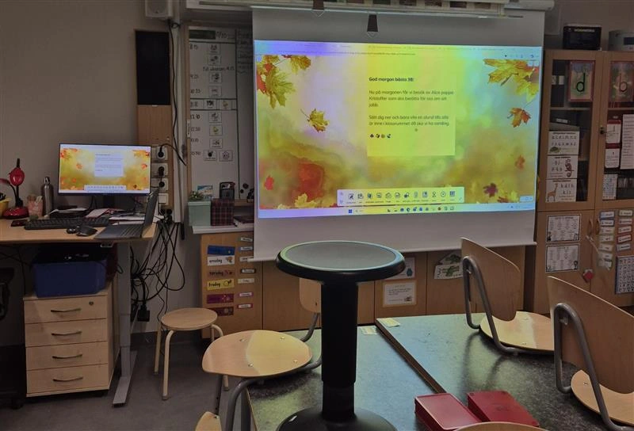
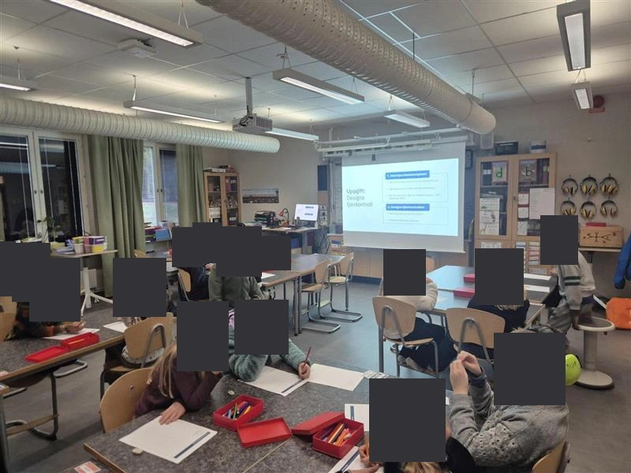
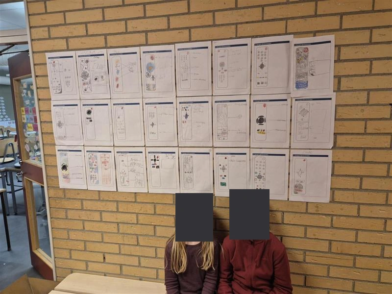

Workshop · Published 14 Oct 2026 · Author: Kristoffer Johansson
UX Design Workshop at School
An introduction to UX design through interviews and a remote-control design exercise.
I visited a class of nine-year-olds at a school in Sweden to explain my work as a UX designer. After a short presentation, the children interviewed a classmate about what they wanted from a remote control and what they found difficult to use. They then drew a remote control for that person, using the interview to decide which buttons it needed and how they should work.
The exercise gave them a small experience of the profession: listening to someone, understanding their needs, and turning what they learned into a design. The presentation and worksheet below are the Swedish materials I used during the visit.
From the visit


